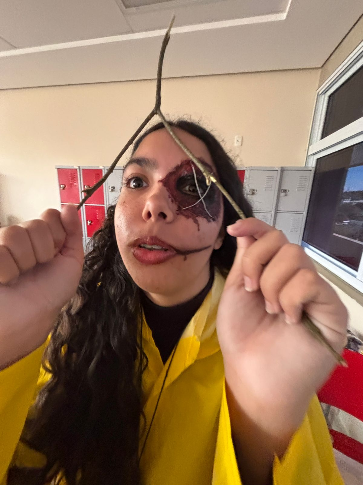
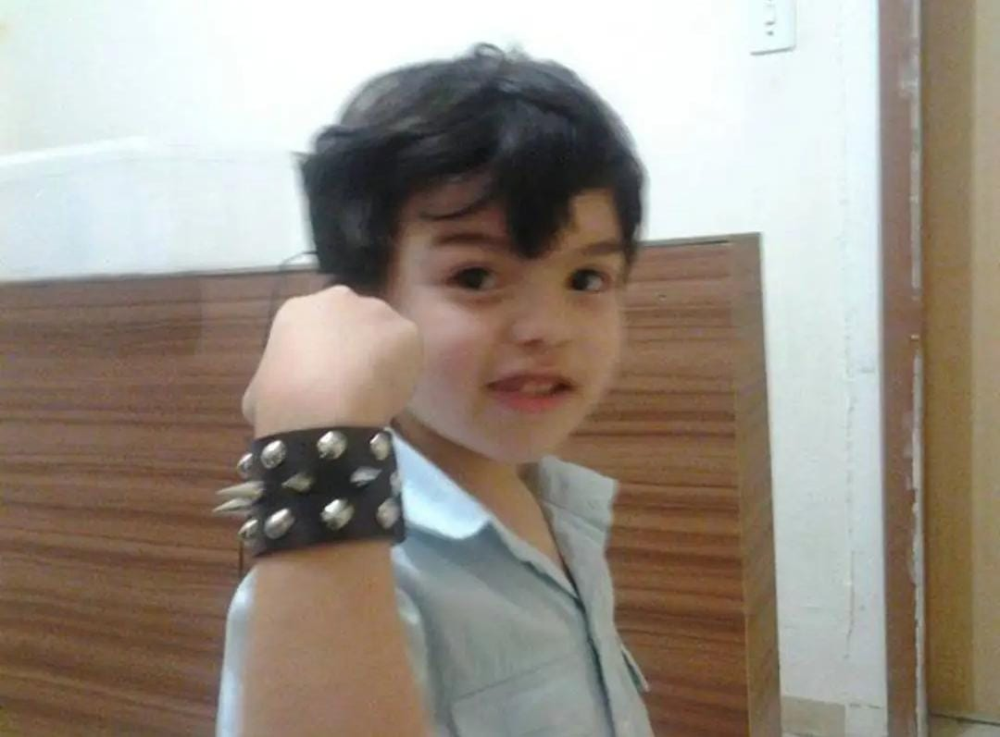
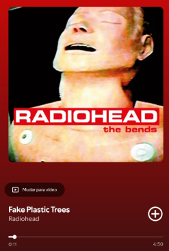
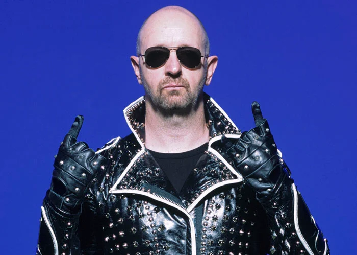

serMaravilhoso
@melhorDeADS · 2min
que chegue as férias logo para eu não fazer nada 🙌🙌🙌

Isoca rosbife
@sapadanca · 4min
gente meu deus isso aqui é minha vida aff veyr como pode

Tavinho Pouco Joelho
@tavinchorapraex · 6min
Projeto volta vida 2025, estudando essa música

MahRacutaia
@xxxNeider · 8min
finalmente eu acabe esse projeto, não aguentava mais
Isoca rosbife
@sapadanca · 10min
gente um mendigo me chamou de v*dia, tipo???????

Judas Priest - Fanpage
@fanjpjudas · 12min
Rob Halford abriu caminho no heavy metal sendo quem
ele é... 🤘🌈
ele é... 🤘🌈

Bruno Messias
@brunoMessias37 · 14min
👀...
Músiquets
@amntMsctWt · 16min
Mania de Você: Que Música!
é uma mulher totalmente segura de si e da sua sexualidade, se
declarando pro seu parceiro. a letra ressalta o quanto a Rita era
apaixonada por Roberto de Carvalho, que todo mundo sabe que foi
o amor da vida dela
é uma mulher totalmente segura de si e da sua sexualidade, se
declarando pro seu parceiro. a letra ressalta o quanto a Rita era
apaixonada por Roberto de Carvalho, que todo mundo sabe que foi
o amor da vida dela
serMaravilhoso
@melhorDeADS · 18min
af vey, o tanto que eu amo minha namorada>>>
eu te amo muito namorada, vou te dar um buque amanha
eu te amo muito namorada, vou te dar um buque amanha
Tavinho Pouco Joelho
@tavinchorapraex · 6min
I just wanna rewind I haven't seen you in a long time
You got me feeling soooo lonely
You got me feeling soooo lonely
MahRacutaia
@xxxNeider · 22min
sera q alguem vai gostar dessa bosta?
Bruno Messias
@brunoMessias37 · 14min
Como isto funciona?!
@elonmusk, i need support.
@elonmusk, i need support.
Você chegou ao fim da página...
Assine o Premium
Assine para desbloquear novos recursos e, se elegível, receba uma parte da receita.
O que está acontecendo
Política · Assunto do Momento
Jair Messias BolsonaroAssunto do Momento em Brasi
Notre DameMúsica · Assunto do Momento
Iron MaidenEsportes · Assunto do Momento
Bellingham